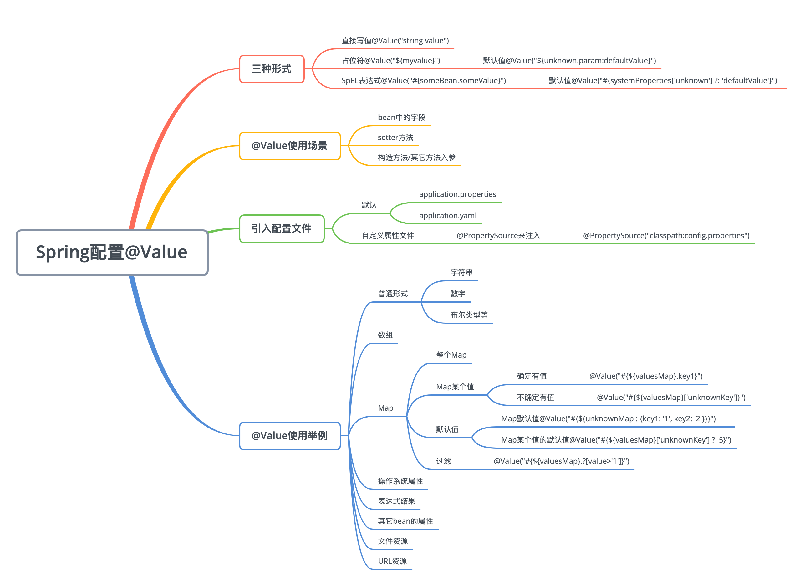

原文连接:https://www.cnblogs.com/larrydpk/p/12079717.html
1 简介
不得不说，Spring为大家提供许多开箱即用的功能，@Value就是一个极其常用的功能，它能将配置信息注入到bean中去。即使是一个简单的功能，Spring也提供了丰富的注入类型和形式。我经常会忘记一些特别类型注入的写法，比如说数组，现在整理一下，希望以后不用再找了。

2 三种形式
使用@Value注入有三种形式，如下所示：
（1）直接写值@Value("string value")
这种方式就是直接把要注入的值字面量写在注解里，比较少用。如果要写死在注解里了，那直接定义变量的时候写死就可以了。
（2）占位符@Value("${myvalue}")
这种应该最常用，通过属性名，将值注入进来。
如果可能为空，需要设置默认值，用法：@Value("${unknown.param:defaultValue}")
（3）SpEL表达式@Value("#{someBean.someValue}")
SpEL表达式很强大，还能在属性值基础上加以运算等。
如果可能为空，需要设置默认值，用法：@Value("#{systemProperties['unknown'] ?: 'defaultValue'}")
另外，占位符形式和SpEL表达式是可以结合使用的，如下：
@Value("#{'${listOfValues}'.split(',')}")
private List valuesList;需要注意的，内外顺序不能倒过来，应该要#{}外面，${}在里面。
3 使用场景
对于注入的场景，主要有三种：
（1）bean声明的变量
（2）setter方法注入
（3）构造方法或其它方法的入参
例子代码如下：
//bean声明的变量
public static class MyValues {
@Value("#{systemProperties['user.timezone']}")
private String timeZone;
}
//setter 方法中
public static class MyValues {
private String timeZone;
@Value("#{systemProperties['user.timezone']}")
public void setTimeZone(String timeZone) {
this.timeZone = timeZone;
}
}
//方法入参
public class MyValues {
private String timeZone;
@Autowired
public void configure(@Value("#{systemProperties['user.timezone']}") String timeZone) {
this.timeZone = timeZone;
}
}4 引入配置文件
既然是注入配置属性，那就需要有配置文件。对于Springboot，引入配置文件有两种方法，一种是默认引入的application.properties，另一种则需要通过@PropertySource来引入，引入的方式如下：
@PropertySources({
@PropertySource(value = "classpath:missing.properties", ignoreResourceNotFound=true),
@PropertySource("classpath:config.properties")
})
public class AppConfig {
//...
}加上ignoreResourceNotFound后，即使文件找不到，也不会抛FileNotFoundException异常。
5 使用举例
现在例举一些可能使用到的例子，以后在这找就行了。
Java代码如下所示：
//直接写值
@Value("plainText")
private String plainText;
//普通形式-字符串
@Value("${myValues.string}")
private String myValuesString;
//普通形式-数字
@Value("${myValues.int}")
private int myValuesInt;
//普通形式-布尔类型
@Value("${myValues.boolean}")
private boolean myValuesBoolean;
//数组
@Value("${myValues.array}")
private String[] myValuesArray;
//Map
@Value("#{${myValues.map}}")
private Map<String, String> myValuesMap;
//操作系统属性
@Value("#{systemProperties['user.timezone']}")
private String timeZone;
//表达式结果
@Value("#{ T(java.lang.Math).random() * 100.0 }")
private double randomNumber;
//其它bean的属性
@Value("#{propertiesApplication.class.getName()}")
private String className;
//文件资源
@Value("classpath:larry.txt")
private Resource file;
//URL资源
@Value("https://www.github.com")
private Resource url;其中，配置文件application.properties内容为：
myValues.int=99
myValues.boolean=true
myValues.string=Larry
myValues.array=my,name,is,larry
myValues.map={name: 'Larry', age: '18', city: 'Guangzhou'}资源文件larry.txt内容为：
上善若水，水利万物而不争！启动程序，打印以上所有属性，输出结果如下所示：
{
plainText='plainText',
myValuesString='Larry',
myValuesInt=99,
myValuesBoolean=true,
myValuesArray=[my, name, is, larry],
myValuesMap={name=Larry, age=18, city=Guangzhou},
timeZone='Asia/Shanghai',
randomNumber=19.775129662772294,
className='com.pkslow.properties.PropertiesApplication$$EnhancerBySpringCGLIB$$4d0912c',
file=上善若水，水利万物而不争！,
url=
<!DOCTYPE html>
<html lang="en">
省略html内容
</html>
}6 总结
本文讲解了@Value注解的使用，基本上平时开发用到的都涉及了，应该不需要再找其它资料了吧。
欢迎关注公众号<南瓜慢说>，将持续为你更新...
1.png)
欢迎加博主微信，做一个点赞之友，哈哈...
多读书，多分享；多写作，多整理。